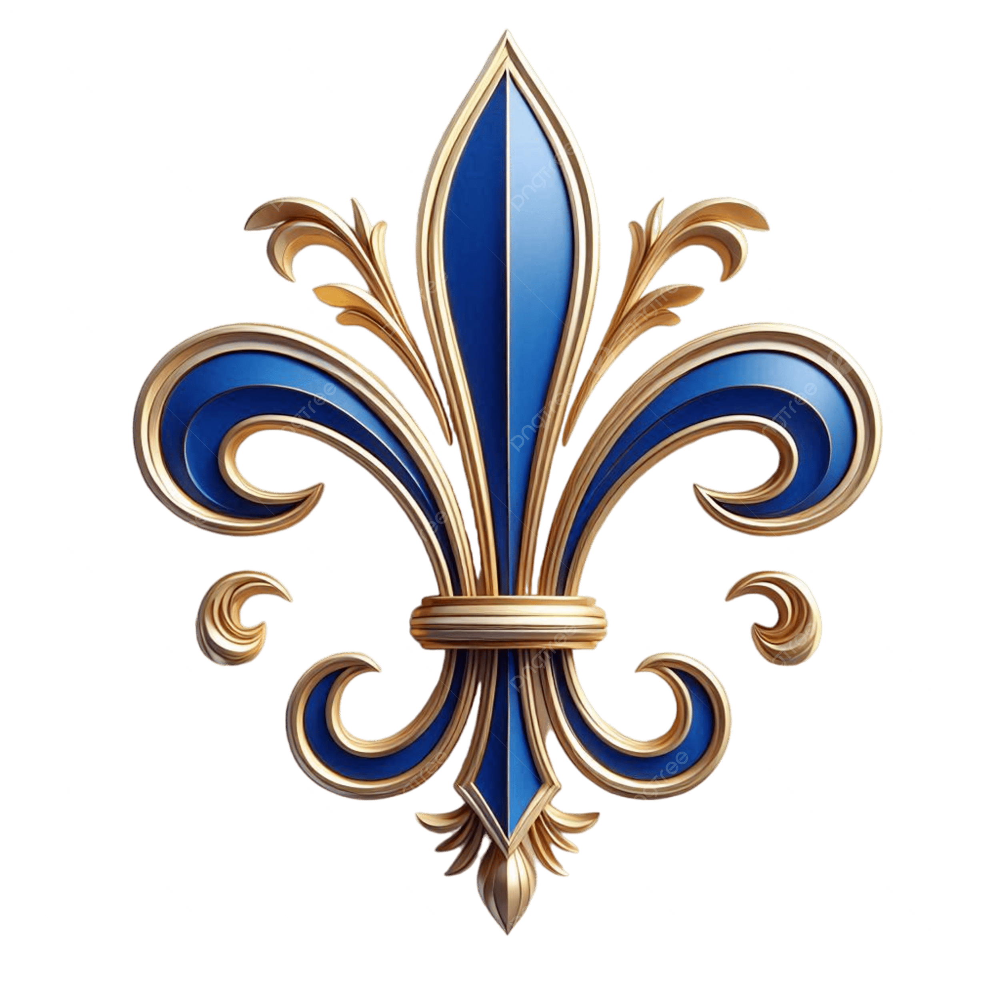

<!DOCTYPE html>
<html lang="en">

<head>
    <meta charset="UTF-8">
    <meta http-equiv="X-UA-Compatible" content="IE=edge">
    <meta name="viewport" content="width=device-width, initial-scale=1.0">
    <title>My Profile</title> 
    <link rel="stylesheet" href="./style.css">
</head>

<body>
</body>

</html>
 <header>
       <div class="mobile-header">
           
           <button type="button" class="hamburger-button">
               
           </button>
       </div>
       <nav class="desktop-nav" aria-label="Primary">
           <ul>
               <li>
                   <a href="">Coders</a>
               </li>
               <li>
                   <a href="">Mentors</a>
               </li>
               <li>
                   <a href="">Partners</a>
               </li>
               <li>
                   <a href="">Blog</a>
               </li>
               <li>
                   <a href="">Contact</a>
               </li>
           </ul>
       </nav>
       <nav class="mobile-nav display-none" aria-label="Primary">
           <ul>
               <li>
                   <a href="">Coders</a>
               </li>
               <li>
                   <a href="">Mentors</a>
               </li>
               <li>
                   <a href="">Partners</a>
               </li>
               <li>
                   <a href="">Blog</a>
               </li>
               <li>
                   <a href="">Contact</a>
               </li>
           </ul>
       </nav>
          <section class="hero">
       <h1>Salem Daciana-White Web Portfolio</h1>
       <a href="#" class="btn-primary">Press to View</a>
   </section>
</body>
 <section class="articles-container">
       <article>
           
           <h2>Biography</h2>
           <p>Enthusiastic and driven. After an extensive career in the luxury beauty industry, I am a student passionate about entering a career in coding and technology. With growing experience in HTML and CSS, I enjoy crafting visually appealing and responsive websites. My study and application of JavaScript allows me to add interactive features, making web experiences engaging and user-friendly. I am also developing my skills in Python, which I use for automating tasks and building simple applications. Problem-solving intrigues me and I thrive when learning new programming concepts. Eager to collaborate and always willing to listen and learn, I am committed to growing as a developer and contributing creative solutions in every project I undertake.
               
           </p>
           <a href="#" class="btn-primary"></a>
       </article>
       <article>
           
           <h2>contact: salemcodes@outlook.com</h2>
           <p>
               src="fleur4.png"
           </p>
           <a href="#" class="btn-primary">Apply</a>
       </article>
       <article>
           
           <h2>6 Month Plus</h2>
           <p>
               She Codes Plus is a program providing an alternate pathway within tech. The Plus program is perfect for
               you if your desire is to enter a tech career.
           </p>
           <a href="#" class="btn-primary">Apply</a>
       </article>
   </section>
</body>
   <footer>
       <a href="https://www.instagram.com/shecodesaus/" title="@shecodesaus on Instagram">
           
       </a>
       <a
           href="https://join.slack.com/t/shecodesaus/shared_invite/enQtNzQ3ODk1OTQzODc3LTQ2ZWFmNzM0NjE1MjA0NTI3YjJkMWMyYWVjMDU3ZThhODJmMTk4YmRjZGMzZDRhZDBhODQwNzdlYmJhNDg1YjE">
           
       </a>
       <a href="https://github.com/SheCodesAus/">
           
       </a>
   </footer>